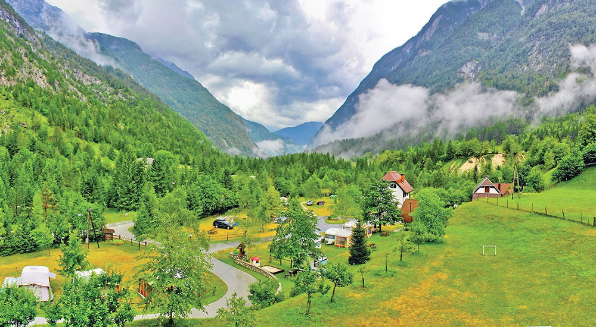

<div class="portfolio-single-load clearfix">
    <div class="custom-full-width-box">
        <div class="custom-container">
            <div class="custom-row align-items-center">
                <div class="custom-image-column">
                    
                </div>
                <div class="custom-text-column">
                    <h2 class="custom-heading">Naran Valley</h2>
                    <p class="custom-paragraph">
                        Naran is a town and popular tourist destination in the upper Kaghan Valley in the Mansehra District of the Khyber Pakhtunkhwa province of Pakistan. It is located 119 kilometers from Mansehra city at an altitude of 2,409 meters. It is located about 65 kilometers away from Babusar Top.
                    </p>
                </div>
            </div>
        </div>
    </div><!-- .custom-full-width-box end -->

</div><!-- end single-project -->
